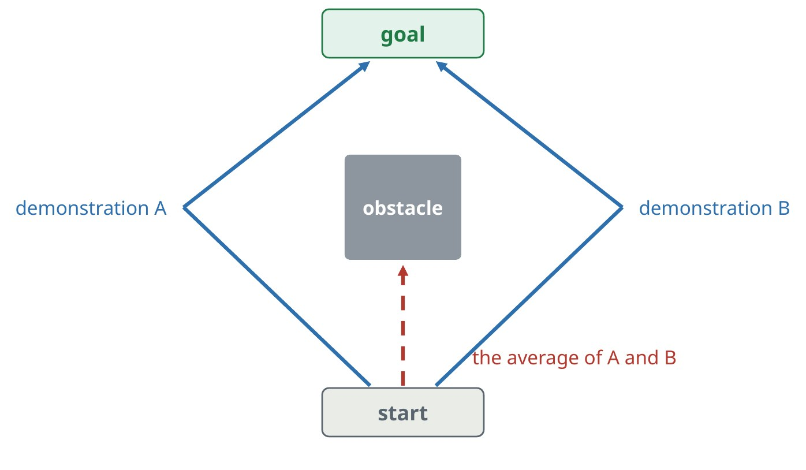
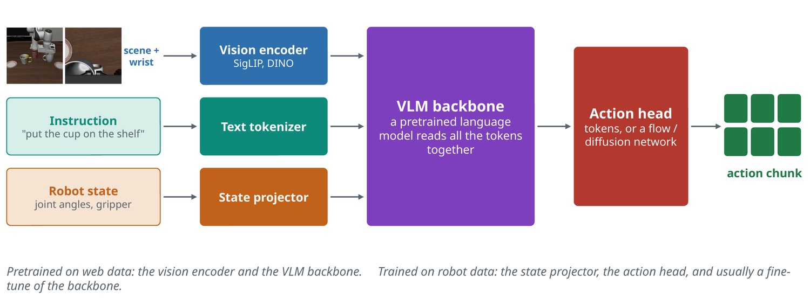
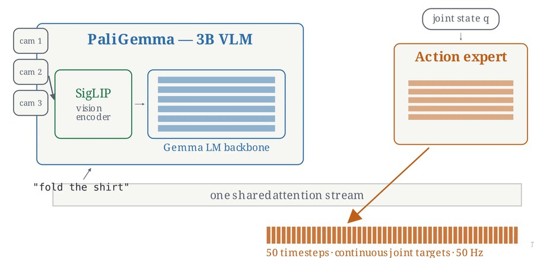
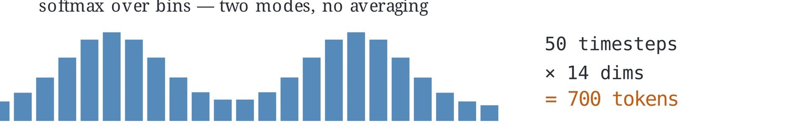
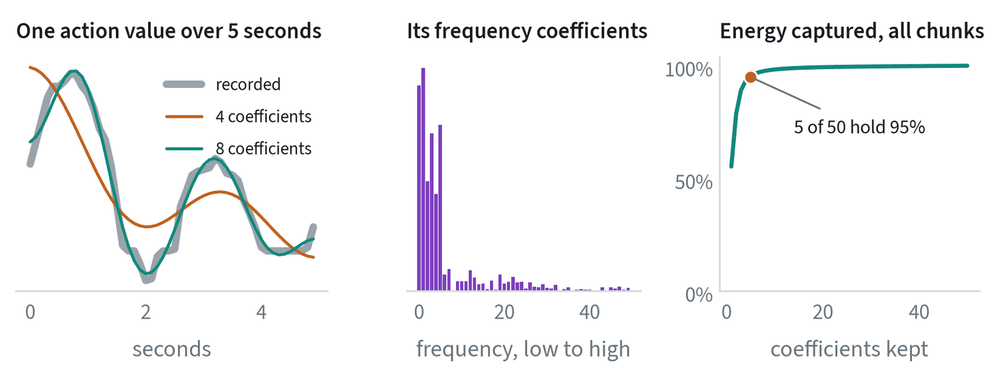
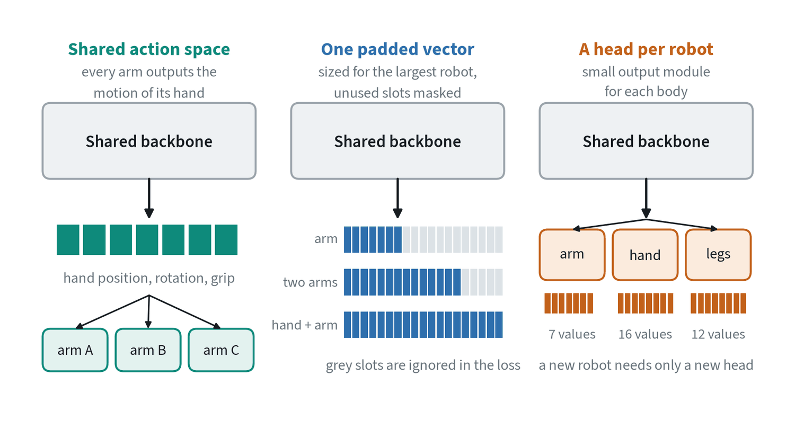

Why actions are generated, not regressed
The obvious way to train a policy is regression: show the model an observation and penalise the distance between its output and the demonstrated action. This fails for a simple reason. Demonstrations contain more than one good answer.


One person steers left around an obstacle and another steers right. A model trained with mean squared error learns the average of the two, which goes straight through the obstacle. The fix is to treat action prediction as generation: start from random noise and refine it into one consistent chunk of future actions, conditioned on recent camera images and the robot’s state. Diffusion Policy showed in 2023 that this gives large gains on manipulation tasks. Most recent systems use flow matching for the same job because it needs fewer refinement steps. The note on generative modeling explains both.
Anatomy of a vision-language-action model
A vision-language-action model, or VLA, is a vision-language model that has been taught to output robot actions.


Camera images go through one or two vision encoders. The instruction is tokenised as text. The robot’s own state is projected into a token. All of these enter a pretrained language-model backbone, which reads them together. An action head then turns the backbone’s output into a short sequence of future actions, called a chunk.
The division of labour matters. The vision encoder and backbone arrive already trained on web-scale images and text, so they know what a cup is and what “on the shelf” means. Robot data only has to teach the acting part: the state projector, the action head, and usually a fine-tune of the backbone.
A real example: π0


π0, published by Physical Intelligence in 2024, follows this pattern closely. The backbone is PaliGemma, a vision-language model of about 3 billion parameters built from the SigLIP vision encoder and the Gemma language model. Beside it sits a separate transformer of about 300 million parameters, the action expert, whose tokens attend to everything the backbone computed.
The action expert is trained with flow matching and produces a chunk of 50 continuous actions in about ten refinement steps. At 50 Hz that chunk is one second of motion. Most of the parameters are spent on understanding the scene; a small expert turns that understanding into movement.
The flow-matching action head, written out
Let be the chunk of actions to predict and the observation: images, instruction and body state. Training draws noise and a time between 0 and 1, forms a point on the straight line between noise and the true chunk, and trains the network to output the direction of that line:
At run time the chunk starts as noise and is moved along the predicted direction in Euler steps of size :
Ten steps is typical. Each step is a pass through the small action network only, because the observation has already been encoded and cached. Sampling from a distribution that favours noisier values, instead of uniformly, is a common refinement: for control, getting the coarse shape of the motion right matters more than polishing its last details.
Two ways to output actions


| Discrete action tokens | Continuous action head | |
|---|---|---|
| How | Sort each action value into a bin and predict the bins like words | A small network refines a whole chunk from noise, reading the backbone’s features |
| Strengths | No new architecture; works with any language model; trains stably | Smooth and precise; a few steps yield many actions |
| Costs | One token per value is slow; bins limit precision | An extra module and loss; it must not degrade the backbone |
Neither has won outright. Newer tokenisers compress a whole chunk into far fewer tokens, and several systems train with tokens but act with a continuous head.
Action tokens, and compressing them
The token route writes each action value as one of bins. On normalised real actions the mean rounding error is 0.0015 with 256 bins and 0.026 with 16, measured on the LIBERO data, so 256 is precise enough. The trouble is length. A 50-step chunk of 7 values is 350 tokens, generated one at a time, and neighbouring tokens are nearly identical, which makes the next token so easy to predict that training learns little from it.


The remedy is the one used for images and audio: change to a basis in which the signal is sparse. Apply a discrete cosine transform along time, round the coefficients, and discard the zeros. Across these chunks, 5 coefficients out of 50 carry 95% of the energy. Rounding the coefficients leaves an average of 95 non-zero values per chunk out of 350, with a reconstruction error of about 1% of the action range. A further lossless compression step on the result, of the kind used for text, brings the count down again. This is the idea behind frequency-space action tokenisers, and it is what lets a token-based policy match a flow-matching one on dexterous, high-rate tasks.
Long tasks
A policy that maps the current image to the next second of motion can pick up a cup. Clearing a table needs a plan and a memory. Two notes cover this: long-horizon tasks for the methods (chunks, sub-task decomposition, reasoning before acting) and system architectures for how a slow planning model and a fast acting model are arranged.
One policy for many robots
No single robot has enough data. Training one policy on data from many different robots is how the field pools what exists, and it works because most of what a policy learns is not about the body: what objects are, what the instruction means, what the task requires. The body-specific part is the output.


- A shared action space. Write every robot’s action as the motion of its hand. This is why end-effector actions dominate cross-robot datasets. It covers arms and breaks down for hands, legs and mobile bases.
- One padded vector. Fix the action size to that of the largest robot and mask what a smaller robot does not use. It is simple, and the model has to learn from context which slots mean what.
- A head per robot. Share the backbone and give each body a small input and output module. A new robot needs only a new head, trained on a little of its own data.
Whichever is used, three details decide whether it works. Tell the model which robot it is, through a token or through the body state, or it will average incompatible conventions. Normalise each robot’s actions with its own statistics. And weight the mixture so the target robot is not drowned out, as the note on robot data shows.
| Transfers well | Transfers poorly |
|---|---|
| Recognising objects and scenes | Reach and workspace |
| Understanding the instruction | Gripper or hand geometry |
| The order of steps in a task | Camera placement |
| Rough motion toward a target | Control rate, forces and contact |
The realistic claim is modest. Cross-robot training does not usually let a policy run on a body it has never seen. It means a new body needs far fewer demonstrations than starting from nothing. A further step is to predict something with no body in it at all, such as future video, tracked points or latent actions, and leave a small robot-specific module to turn that into motor commands.
Keeping what the backbone knew
Fine-tuning a vision-language model on robot data can damage the knowledge that made it worth starting from. The action loss is new, its gradients are large and unlike anything in pretraining, and they flow into the backbone. Three practices limit the damage.
- Co-training. Keep training on web image-and-text tasks alongside the robot data, so the backbone is still held to what it knew.
- Discrete targets for the backbone. Train the backbone on tokenised actions with ordinary cross entropy, a loss of the kind it was pretrained with, and train the continuous action head on its features.
- Stopping the gradient. Do not let the action head’s loss flow back into the backbone at all. The backbone learns from its own token loss, and the head adapts to whatever features result.
The combination of the last two has been reported to train faster and to follow language better than letting everything flow. The general lesson is that how the losses are routed matters as much as which architecture is used.
Where the field is heading
- Dual-system designs. A large, slow model understands the scene a few times a second while a small, fast model produces actions at control rate.
- Embodied reasoning. Before acting, the model states the sub-task, the objects involved and where they are. This helps on long tasks and makes failures easier to explain.
- Cross-embodiment training. One model is trained on data from many different robots, so a new robot needs less data of its own.
Common mistakes
- Mixing action spaces. A dataset recorded as absolute joint positions fed to a policy that expects relative hand motion will not crash. The robot will simply move wrongly.
- Trusting offline error. A policy with a low action error on held-out data can still fail when its own actions change what it sees next.
- Adding refinement steps. More steps cost latency, and a late action is a wrong action.
Terms
- Policy
- The function from what the robot senses to what it does.
- Action chunk
- A short sequence of future actions produced in one call.
- Action head
- The part of the model that outputs actions.
- VLA
- A vision-language model trained to output robot actions.
- Sub-task
- One step of a longer task, small enough for the low-level policy to carry out.
- Embodiment
- A particular robot body: its joints, reach, hand and sensors.
- Cross-embodiment training
- Training one policy on data from several different robot bodies.
- Action expert
- A small network attached to a vision-language backbone that generates continuous actions.
- Discrete cosine transform
- A change of basis that writes a signal as a sum of cosines of increasing frequency.
- Stop-gradient
- Blocking a loss from updating part of a network.
In my work
Further reading
- Chi et al., 2023. Diffusion Policy: Visuomotor Policy Learning via Action Diffusion.
- Brohan et al., 2023. RT-2: Vision-Language-Action Models Transfer Web Knowledge to Robotic Control.
- Kim et al., 2024. OpenVLA: An Open-Source Vision-Language-Action Model.
- Black et al., 2024. π0: A Vision-Language-Action Flow Model for General Robot Control.
- Open X-Embodiment Collaboration, 2023. Robotic Learning Datasets and RT-X Models.
- Shi et al., 2025. Hi Robot: Open-Ended Instruction Following with Hierarchical Vision-Language-Action Models.
- Pertsch et al., 2025. FAST: Efficient Action Tokenization for Vision-Language-Action Models.
- Doshi et al., 2024. Scaling Cross-Embodied Learning: One Policy for Manipulation, Navigation, Locomotion and Aviation.
- Driess et al., 2025. Knowledge Insulating Vision-Language-Action Models: Train Fast, Run Fast, Generalize Better.